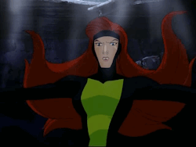
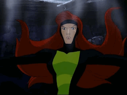

Jean Grey
No colégio , ela se tornou uma estrela do time de futebol do Bayville Soccer Team e também atraiu a atenção do astro do futebol Duncan Matthews . O relacionamento de Jean com Duncan realmente incomodava Scott, que também tinha uma queda por Jean. O fato de sua colega de classe Taryn ter se aproximado de Scott irritou Jean mais do que ela gostaria de admitir, mas os dois X-Men ainda não haviam discutido seu relacionamento.
 

Personalidade
Jean Grey foi a "Miss Popular" dos X-Men. Ela é inteligente, teimosa, bonita, confiante, querida e uma atleta naturalmente talentosa. Ao contrário de muitos mutantes que começaram como párias sociais e descobriram que seus horizontes eram expandidos por meio de sua associação com o Instituto Xavier , Jean começa em uma posição elevada de status social, já que se mostrou muito popular no colégio.
No entanto, ela é um pouco insegura e possui uma veia de ciúme quando se trata de Scott Summers . Como parte dos X-Men, ela ajudou jovens mutantes a se acostumarem com suas novas vidas, agindo como um pacificador quando suas emoções por ser um mutante tomam o melhor deles.
Jean é uma linda garota caucasiana com uma figura alta e atlética. Ela tem cabelos longos e ruivos, que usa livremente nas costas, e olhos verdes. ( Steven E. Gordon , que desenhou Jean, usou o penteado de Odette e as características faciais desde que ajudou a criar a Princesa Cisne). Jean geralmente usa uma camisa roxa clara justa com um leve decote em V (expondo o naval), calça cáqui e sandálias marrons abertas. Ela accessorised com pulseiras de ouro em cada um de seus pulsos.
Seu segundo traje consiste em uma camisa amarela de manga 3/4 com detalhes em laranja (expondo o naval) , jeans justos com cinto escuro e salto alto prata. Ela complementa com pulseiras roxas em cada um de seus pulsos e um colar de prata.
Seu terceiro traje incluía uma camisa de mangas curtas verde-oliva e listrada de amarelo (expondo o naval), uma saia longa marrom-lápis com um cinto marrom escuro e sandálias de amarrar amarelo. Ela complementa com pulseiras de ouro em ambos os pulsos.
Para dormir, ela usa uma camisola azul-clara que vai até o meio da coxa e tem mangas curtas. As bainhas da saia e das mangas e a gola da camisola são amarelo-claro e há uma leve fenda na coxa.
Home